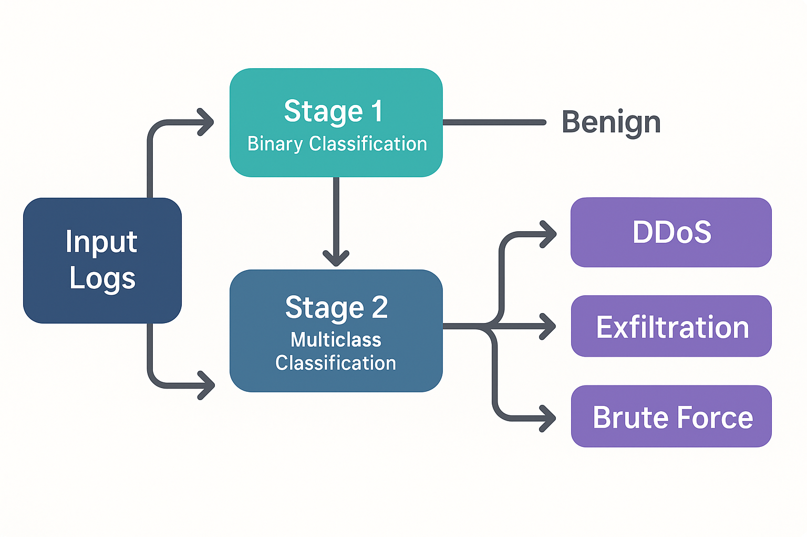

// Security Analytics Project
Attack Triage Classifier
A two-stage XGBoost pipeline that first detects attacks, then identifies which kind — trained on 6.6 million real NetFlow records.
Project Overview
The goal of this project is to build a practical, high-performance classifier that can handle the full triage workflow a SOC analyst faces: first, is this flow an attack at all? And if so, what kind? Rather than collapsing everything into one multiclass problem, the pipeline uses two chained XGBoost models — one binary, one multiclass — so each stage can be tuned, evaluated, and replaced independently.
All 10 source files are concatenated into a single dataset, an 80/20 train/test split is made (stratified on the binary target to preserve class ratios), and both models are trained on the same split for a fair end-to-end evaluation.
Attack vs. Benign
A binary XGBoost classifier is trained to flag each flow as "benign" or "attack." It achieves ~98% accuracy and 0.99 AUC on held-out data and trains on millions of flows in under 20 seconds on commodity hardware.
Attack Type Identification
Flows predicted as "attack" by Stage 1 are passed to a multiclass XGBoost model trained exclusively on attack-labeled flows. It outputs one of 14 specific attack labels — DDoS-HTTP, SSH-BruteForce, SQL Injection, Bot, Infiltration, and more. Dominant classes reach F₁ > 0.99; minority classes with very few training samples (e.g. FTP-BruteForce: 53 records, SQL Injection: 85 records) show lower scores, highlighting the real-world challenge of long-tail attack distributions.

Dataset
Data is sourced from the CIC-IDS-2018 dataset, published by the Canadian Institute for Cybersecurity (CIC) at the University of New Brunswick and hosted on the AWS Open Data Registry. The dataset simulates a realistic enterprise network over 10 days in February–March 2018, capturing both benign background traffic and coordinated attack scenarios.
Each flow is represented by 77 numeric features extracted by CICFlowMeter — including packet lengths, inter-arrival times, flag counts, flow duration, and byte ratios — plus a label column. All 10 files are combined for a total of ~6.66 million flow records and 14 distinct attack labels.
Across 10 daily capture files, Feb–Mar 2018
CICFlowMeter-derived: timing, packet stats, flags, byte ratios
Spanning DDoS, DoS, Brute Force, Botnet, Infiltration, and Web attacks
Stratified on binary target to preserve class balance
Source Files & Attack Labels
- Botnet-Friday: 771k flows — Bot (144k) vs. Benign
- Bruteforce-Wednesday: 619k flows — SSH-Bruteforce (94k), FTP-BruteForce (53) vs. Benign
- DDoS1-Tuesday: 955k flows — DDoS-LOIC-HTTP (575k) vs. Benign
- DDoS2-Wednesday: 561k flows — DDoS-HOIC (199k), DDoS-LOIC-UDP (1.7k) vs. Benign
- DoS1-Thursday: 795k flows — DoS-GoldenEye (41k), DoS-Slowloris (10k) vs. Benign
- DoS2-Friday: 592k flows — DoS-Hulk (145k), DoS-SlowHTTPTest (55) vs. Benign
- Infil1-Wednesday & Infil2-Thursday: 706k flows combined — Infiltration (118k) vs. Benign
- Web1-Thursday & Web2-Friday: 1.66M flows combined — Brute Force Web (568), XSS (229), SQL Injection (85) vs. Benign — extreme class imbalance
Highlights
- Two-Stage Architecture: Separating binary detection from multiclass triage means each model is optimized for its own task — reducing false alarms at Stage 1 before spending compute on fine-grained classification.
- Fast Training on Large Data: Both XGBoost models train in well under a minute combined on 5+ million training records, with no GPU required.
- Extreme Class Imbalance Handling: With attack types like SQL Injection appearing only 85 times across 1.66M flows, per-class F₁ metrics surface real gaps that aggregate accuracy hides.
- Sankey Visualization: The classification flow diagram shows exactly how traffic is routed through both stages, making the pipeline's behavior interpretable for non-technical audiences.
- Actionable Blind Spots: Low-sample attack classes are not ignored — their poor F₁ scores are documented and inform where labeled data collection efforts should focus next.
Visualizations
F₁ score breakdown by attack class alongside the Sankey diagram showing how the two-stage pipeline routes traffic from the full dataset through binary detection to specific attack type classification.


Notebook
Full pipeline in a single notebook: data loading and concatenation, 80/20 stratified split, Stage 1 binary XGBoost training and evaluation, Stage 2 multiclass training on attack-only flows, end-to-end classification report, and Sankey diagram generation.
View Notebook →Key Takeaways
- A two-stage architecture cleanly separates detection from triage, making each model independently maintainable and explainable.
- XGBoost consistently delivers near-perfect accuracy on high-volume network flow data with minimal tuning and very fast training times.
- Aggregate accuracy is a misleading metric for imbalanced datasets — per-class F₁ scores tell the real story about where the model works and where it needs more data.
- Real-world attack distributions are extremely skewed: some classes appear tens of thousands of times, others fewer than 100. Acknowledging this in the evaluation is as important as achieving high performance on the dominant classes.